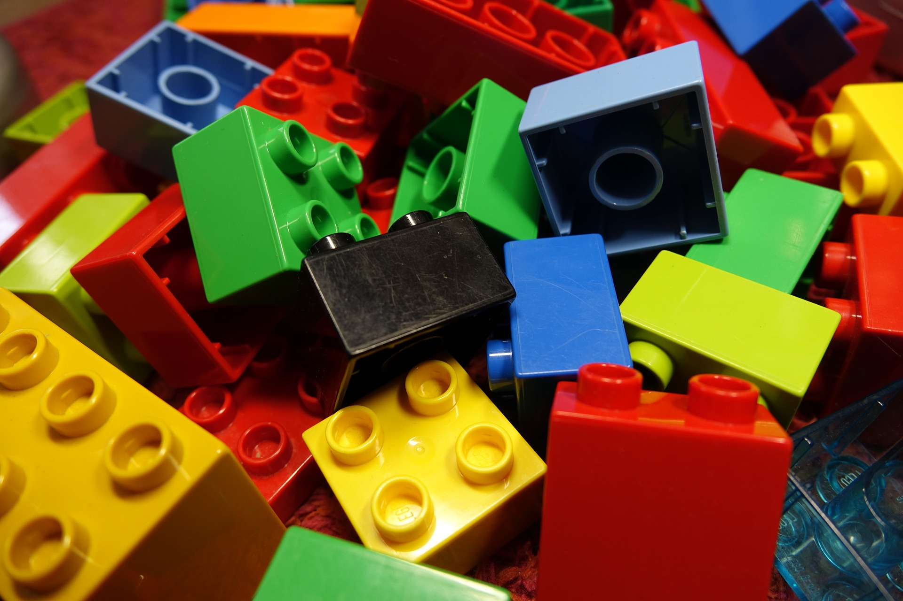
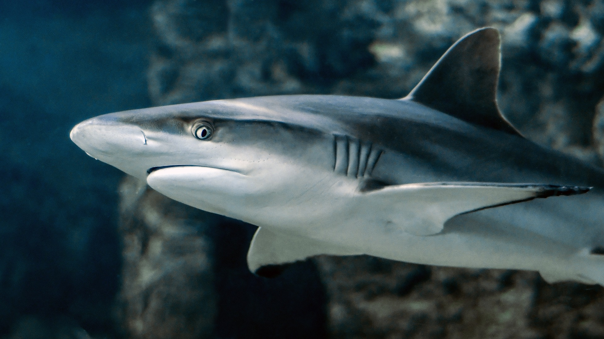

Do It! VEX GO: A Day in My Ecosystem
 The Challenge
The Challenge
Your challenge is to build or create an ecosystem for the animal of your choice. Once your ecosystem is created, you will then build your animal using VEX GO Code Base. Program your animal through its ecosystem using block coding.
Getting Started
Go to VEXcode GO to start a new block programming project.
Firmware Update
You may need to update the firmware on the VEX GO brain. The first time you do this, you'll need to use VEX Classroom on an iPad. The next time, you can update the Brain in VEXcode GO.
Learn how to update the firmware using this website and the Firmware Update Instructions.
Connect the Brain
Connect the brain to VEXcode GO. Click on the "Brain" button in VEXcode GO. Click "Connect."
Pair your brain with your computer. Make sure your brain is flashing green.

Project Steps
-
Research an Ecosystem
- Build Your Ecosystem
- Choose an Animal
- Build Your Animal
- Program Your Animal
-
Record Your Animal
Research an Ecosystem
Research and brainstorm which ecosystem you would like to recreate. Review the different types of ecosystems in the What You Should Know section. Think about what size your ecosystem will be. How will you ensure that it’s big enough for the animal to move around?
Build Your Ecosystem
Build your ecosystem with building materials or with drawing materials. What materials would be best to build your ecosystem?

Make sure your ecosystem includes
- Vegetation, or plants, found in that ecosystem
- Other animals, including predators (animals that hunt and eat other animals)
- Water sources
Choose an Animal
Choose an animal that lives in that ecosystem. For example, if your ecosystem is marine you could choose a shark or a whale.
 
Build Your Animal
Build your animal using VEX GO robotics.
You will need a brain to program your animal to move around its ecosystem.
You will also need a motor to make parts of your animal move.
You can start with building the code base, and then you can add or remove any pieces to make it look and move like your animal.
VEX GO Code Base Build Instructions
Program Your Animal
You will use block coding to program your animal to move around its ecosystem. Remember to program your animal around its ecosystem to meet all of its basic needs.
- How will you know what blocks you need to program your animal?
- Would using loops make it easier? If so, how?
- What do you do when your program doesn’t work the way you wanted it to?
Debugging is what it means to identify your programming error and fix it.

Record Your Animal
Make sure to record your animal moving around its ecosystem for your project submission. Some things to include in your video:
- Your animal moving its way around the ecosystem.
- The program on your screen while it’s working.
- An explanation of where the animal is moving in the ecosystem.
For example: The Zebra is now drinking water from the stream because it needs water to survive.